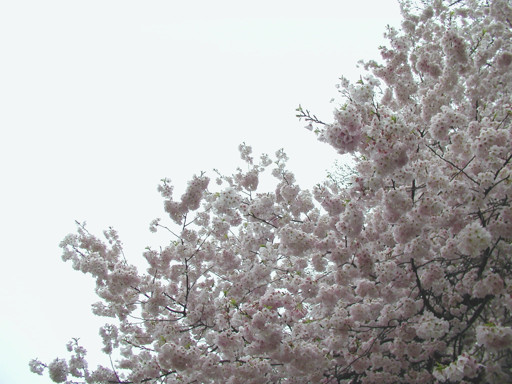
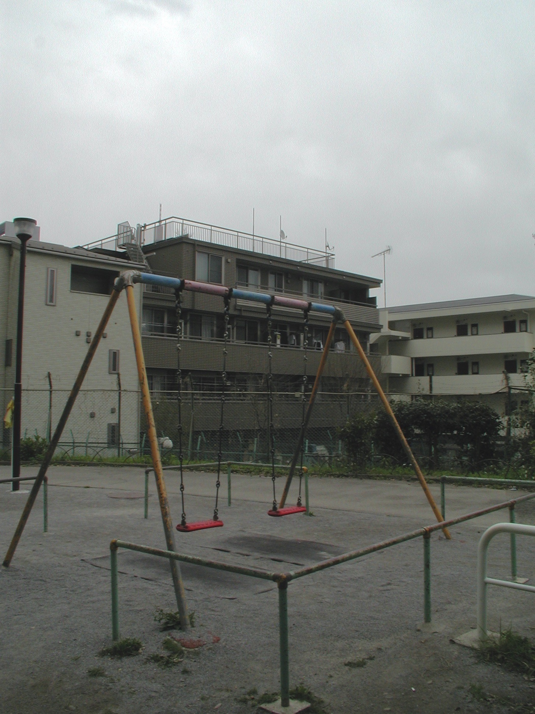
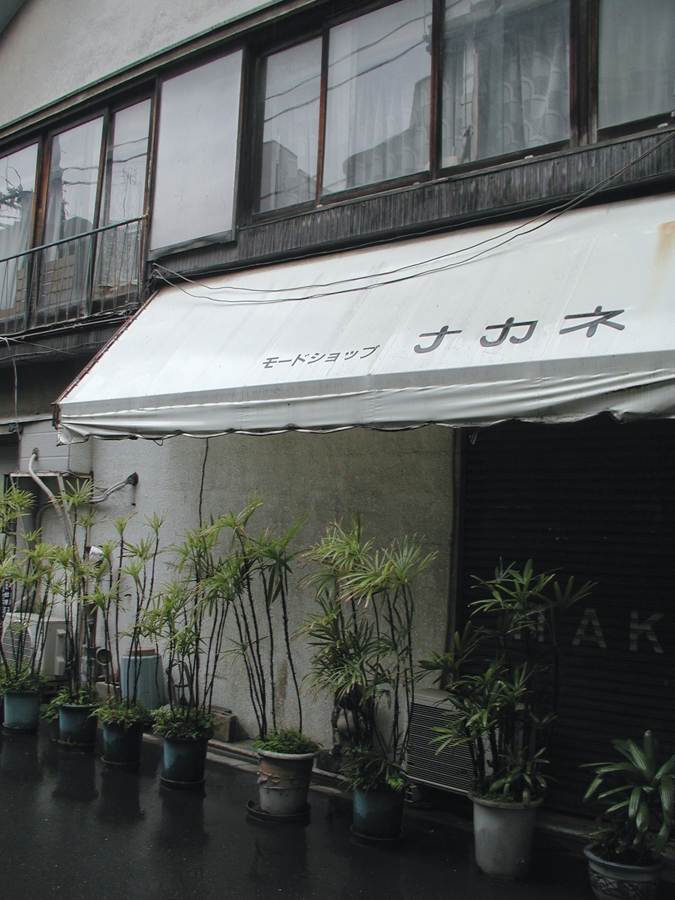

Nara Park
♪ let's stay together, いつも ♫
Ōsaka Castle, America-mura
Meiji Jingu, Shinkansen, Ōsaka
Shinjuku-koen, Mitaka, Ghibli Museum, Higoro

the sakura lives up to the hype
the best food I had in Japan was at a small Shinjuku izakaya called ひごろ (Higoro). their menu is all vegetarian and features seasonal, native produce from Japan purchased everyday at local markets. i also had the most amazing Sakura Sake to drink. our party with the owner, Nobu-san, & the chef pictured above
Shinjuku, Asakusa, Akihabara, Transit

loved this park by our hotel in Shinjuku
chasen-tate after a (casual) matcha ceremony

this Shinjuku train station was beautiful. by angela
Shinjuku, Chūo market, Asakusa (Sensō-ji), Meiji Jingu, Shibuya, Transit - ありがとうございます、丸さん

the first Shintō shrine I saw in Japan, dedicated to the oldest living tree in Tōkyō! this 300+ y/o Gingko watched over us during our stay. pictured right

tourist! by angela
votive tablets at Meiji Jingu shrine
i am obsessed with the unique train arrival jingles at each station
peak soundscape for peak time between Harajuku → Shinjuku
airport champagne!